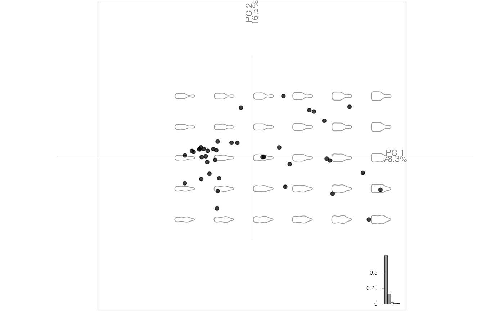
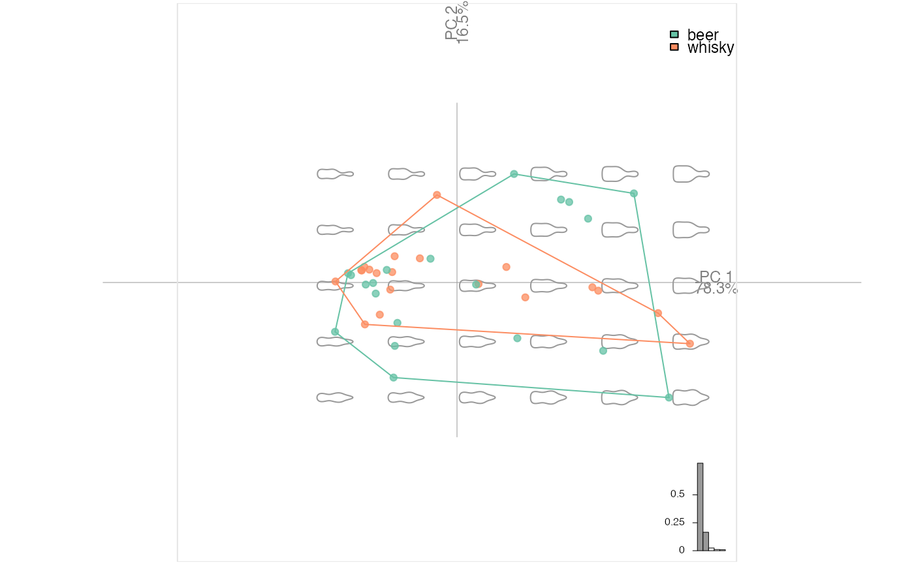
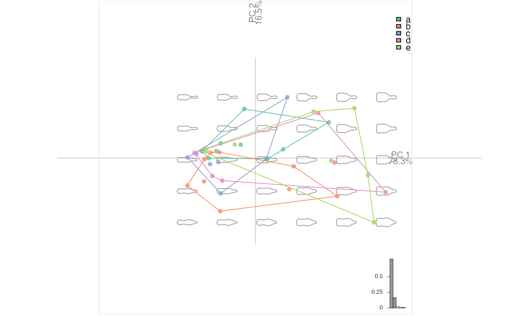
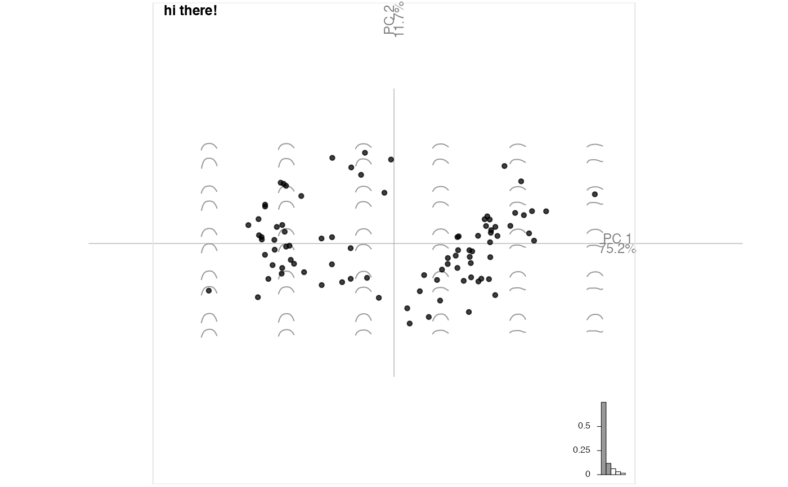
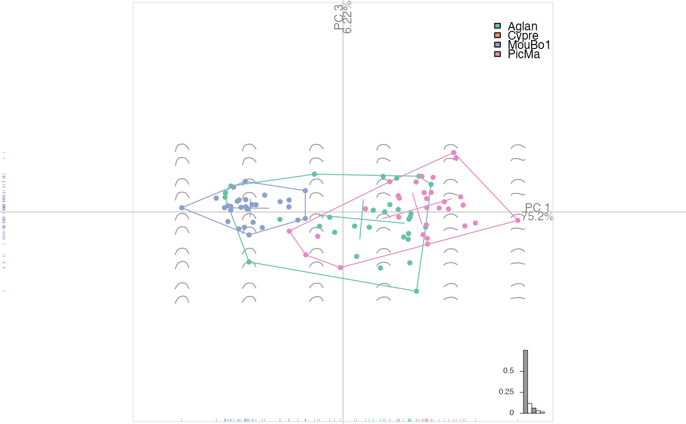

plot_PCA(x, f = NULL, axes = c(1, 2), palette = NULL, points = TRUE, points_transp = 1/4, morphospace = TRUE, morphospace_position = "range", chull = TRUE, chullfilled = FALSE, labelpoints = FALSE, labelgroups = FALSE, legend = TRUE, title = "", center_origin = TRUE, zoom = 0.9, eigen = TRUE, box = TRUE, axesnames = TRUE, axesvar = TRUE)
| x | a PCA object |
|---|---|
| f | factor specification to feed fac_dispatcher |
| axes |
|
| palette |
|
| points |
|
| points_transp |
|
| morphospace |
|
| morphospace_position | to feed layer_morphospace_PCA (default: "range") |
| chull |
|
| chullfilled |
|
| labelpoints |
|
| labelgroups |
|
| legend |
|
| title |
|
| center_origin |
|
| zoom |
|
| eigen |
|
| box |
|
| axesnames |
|
| axesvar |
|
This approach will replace plot.PCA (and plot.lda in further versions.
This is part of grindr approach that may be packaged at some point. All comments are welcome.
### First prepare two PCA objects. # Some outlines with bot bp <- bot %>% mutate(fake=sample(letters[1:5], 40, replace=TRUE)) %>% efourier(6) %>% PCA#>plot_PCA(bp)plot_PCA(bp, ~type)plot_PCA(bp, ~fake)#># Some curves with olea op <- olea %>% mutate(s=coo_area(.)) %>% filter(var != "Cypre") %>% chop(~view) %>% opoly(5, nb.pts=90) %>% combine %>% PCA op$fac$s %<>% as.character() %>% as.numeric() op %>% plot_PCA(title="hi there!")### Now we can play with layers # and for instance build a custom plot # it should start with plot_PCA() my_plot <- function(x, ...){ x %>% plot_PCA(...) %>% layer_points %>% layer_ellipsesaxes %>% layer_rug } # and even continue after this function op %>% my_plot(~var, axes=c(1, 3)) %>% layer_title("hi there!")# grindr allows (almost nice) tricks like highlighting: # bp %>% .layerize_PCA(~fake) %>% # layer_frame %>% layer_axes() %>% # layer_morphospace_PCA() -> x # highlight <- function(x, ..., col_F="#CCCCCC", col_T="#FC8D62FF"){ # args <- list(...) # x$colors_groups <- c(col_F, col_T) # x$colors_rows <- c(col_F, col_T)[(x$f %in% args)+1] # x # } # x %>% highlight("a", "b") %>% layer_points() # You get the idea.